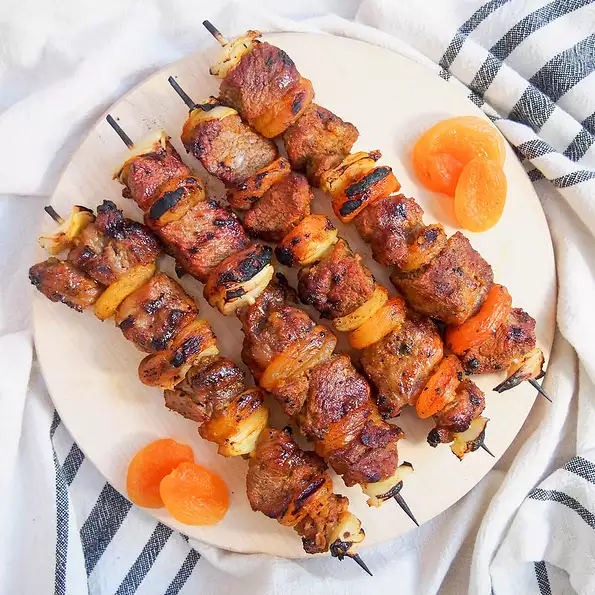

South African Lamb Sosaties (Kebabs)
This is a traditional South African braai (bbq) dish that can also be prepared using venison or beef. This dish is best if meat and vegetables are allowed to marinate overnight before grilling.

Prep: 30 mins
Cook: 30 mins
Additional: 8 hrs
Total: 9 hrs
Servings: 8
Ingredients
- 1 cup plain yogurt
- 2 teaspoons curry powder
- 1 tablespoon white sugar
- 1 tablespoon vegetable oil
- 1 large onion
- 1 cup cubed lamb stew meat
- 12 ounces dried apricots
- 8 kabob skewers
Directions
- Make the sauce by mixing together the yogurt, curry powder, sugar and oil in a small bowl. Taste and adjust seasonings to your liking.
- Peel and cut the onion into 1 inch cubes. Thread skewers alternating lamb cubes, onion dried apricot halves. Place them into a large resealable bag and pour in the sauce. Make sure the kabobs are evenly well coated. Refrigerate and allow to marinate overnight or for at least 8 hours.
- Preheat grill to medium heat and lightly oil grate.
- Grill the kabobs over medium coals for 8 to 10 minutes on each side, or to your desired doneness.
- Serve and Eat.
Nutrition Facts
Per Serving:172 calories; protein 6.5g; carbohydrates 31.9g; fat 3.3g; cholesterol 12.2mg; sodium 35.2mg.
Go to: allrecipes for full details
Contact Wilbrod on: ntawihawilbrod@gmail.com or
n.wilbrod@yahoo.com